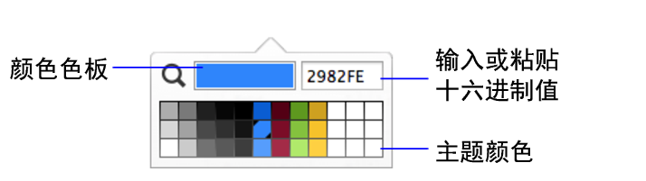

2. 在"检查器"中，单击"外观  "选项卡。
"选项卡。
2. 在"检查器"中，单击"外观 "选项卡。
3. 要更改处于特定状态（例如，按下某个按钮时）的对象或正文部分的外观时，请从对象状态列表（选项卡中的第二个列表）中进行选择。
请参阅指定对象的显示状态。
4. 在"图形"区域中：
要添加或更改 | 选择 |
对象的填充（包括文本对象、字段和入口的背景）或布局部分 | 填充 对正文部分的填充同时会影响"表视图"中表的背景。 如果入口中未出现填充设置，请将入口行设置为透明。请参阅设置入口的格式。 |
对象或布局部分周围的边框 | 边框的任意组合 |
重复字段之间的边框 | 重复之间的边框 |
对象或布局部分周围的样式和边框宽度 | 线条 |
对象或布局部分周围的边框颜色 | 颜色 |
对象或布局部分角的曲率 | 圆角半径 选择要更改的角，并指定值（以磅为单位）。该值越大，角就越圆。 |
入口行之间的边框 | 请参阅设置入口的格式。 |
填充颜色的透明度 | 不透明度滑块 Windows：拖动调色板中的滑块。 macOS：单击调色板中的"其他颜色"，然后拖动滑块。 |
自定义颜色 | 填充或线条  将颜色从调色板或颜色色板拖动到主题颜色区域，然后单击该颜色。（自定义颜色的明暗变化由 FileMaker Pro Advanced 生成。）您可以替换或添加到现有主题颜色。 颜色的十六进制格式 RGB 值显示在文本框中。您可以输入或粘贴三个或六个字符的值。 要设置特定的颜色值，请单击 。将鼠标指针从屏幕上移动到颜色，然后单击。 |
5. 要添加阴影或更改内边距，在"高级图形"区域中：
•对于对象上的内阴影或外阴影，或布局部分上的内阴影，选择"效果"选项。要更改阴影外观，请单击选项旁的 。
•对于对象的边缘和内容之间的内边距，请更改"内边距"（以磅为单位）。
1. 确保一个或多个布局部分的填充为透明。
请参阅下文的"要使对象、布局部分或布局背景透明"。
2. 请确保未选中任何对象或布局部分，然后单击布局背景中的任意位置进行选择。
3. 在外观 选项卡的"图形"区域中，对于"填充"，选择"纯色"。
4. 单击 ，然后从调色板中选择一种颜色。
要使用自定义颜色，请参阅上面的"要更改对象或布局部分的外观"。
5. 要更改填充颜色的透明度，再次单击 ，然后拖动"不透明度"滑块 (Windows)，或者单击"其他颜色"，然后拖动"不透明度"滑块 (macOS)。
1. 选择一个或多个对象，或一个部分标签，或单击布局背景中的任意位置进行选择。
在选择布局背景前，请确保未选中任何对象或布局部分。
2. 执行以下某项操作：
•在检查器中：在外观 选项卡的"图形"区域中，对于"填充"和"线条"，选择调色板中的"无"或透明 。
•您不能在线条、椭圆形、圆形、选项卡控件或滑动控件上设置单个边框。
•并非所有"高级图形"区域中的选项都可用于所有对象类型。
•布局背景填充不会延伸至导航部分后面。